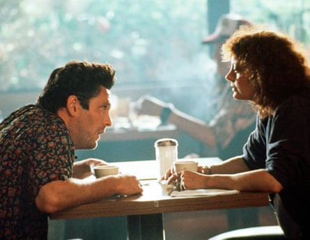
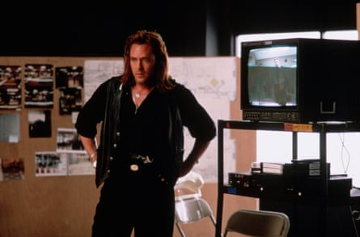
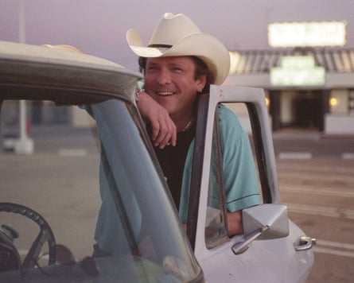

The actor Michael Madsen, who has died aged 67 of a cardiac arrest, saw himself as a “throwback” to the era of noir heavies such as Robert Mitchum and Lee Marvin. But plying his jocular menace in the modern Hollywood era gave the actor expanded possibilities for movie violence that elevated him, at certain moments, to a timeless screen presence.
When he severed a policeman’s ear in Quentin Tarantino’s 1992 debut Reservoir Dogs, after sadistically bopping to the sounds of Stealers Wheel’s pop hit Stuck in the Middle With You , it became Madsen’s calling-card scene. He had originally auditioned for the part of Mr Pink, the role eventually played by Steve Buscemi , before the director realised his imposing qualities were perfect for the loose-cannon psychopath, Mr Blonde. “Are you gonna bark all day, little doggie, or are you gonna bite?” Madsen taunts Harvey Keitel’s Mr White, sipping a soda.
This was Madsen’s breakthrough role, in which he incarnated Tarantino’s notions of freeze-dried cinematic cool; the start of a long association between actor and director. The pair fell out for a time after Madsen declined the role of Vincent Vega – the brother of his Reservoir Dogs character – in Pulp Fiction ; he was contracted to the now forgotten 1994 western Wyatt Earp .
But after reconciling, Madsen went on to play notable parts in Kill Bill : Vols 1 & 2 (2003 and 2004), The Hateful Eight (2015) and Once Upon a Time in Hollywood (2019). He appreciated the director’s loyalty: “I would have been dead and buried long ago if it wasn’t for Quentin,” he told Deadline Hollywood .
With his rangy frame, dark Italianate looks and Eastwoodian squint, Madsen was an obvious casting choice for 1990s crime films, convincing as both detective – in the LAPD thriller Mulholland Falls (1996) – and felon –in the 1994 remake of Sam Peckinpah’s The Getaway and in the revisionist gangster film Donnie Brasco (1997).
Michael Madsen and Susan Sarandon in Thelma & Louise, 1991.Photograph: TCD/Alamy
Though his brooding aura could also be refashioned to romantic ends – as shown in another early role as Susan Sarandon’s boyfriend in Thelma & Louise (1991) – he was soon typecast as an American badass (also the title of a 2023 documentary retrospective dedicated to him). After his 90s breakthrough, quality control quickly dissipated; his filmography ballooned to more than 300 titles, most straight-to-video dreck with titles such as Piranhaconda, A Cold Day in Hell, and Garlic & Gunpowder.
In the scrabble for a pay-cheque, he rued the narrowing effects on his career. “They bought my name, and they bought my face to put on the DVD box with a gun,” he told the Independent . “What people don’t always understand is that I established a lifestyle for my family.”
Madsen was one of the dying breed of actors who brought blue-collar grit to the profession. Born in Chicago , he was one of three children of Elaine (nee Melson) and Calvin Madsen, growing up alongside his sisters, Cheryl and Virginia. His father was a second world war Navy veteran and firefighter; his mother worked in finance but, after divorcing “Cal” when Madsen was nine, later became a film producer. Raised by his father, who physically beat him, the wary youth had a delinquent adolescence, including jail terms for car theft, assault and burglary.
Michael Madsen in The Getaway, 1994.Photograph: Universal/Kobal/Shutterstock
Later working as a mechanic at Joe Jacobs Chevrolet dealership, idolising the Nascar champion driver Richard Petty, Madsen was at first more enthused by motor racing than the arts. Watching Mitchum in the 1957 wartime romance Heaven Knows, Mr Allison altered his course. “When I saw that movie, I thought: ‘I could probably do that.’” Not long after having his first child, Jessica, with his girlfriend Dana Mechling, Madsen was stunned by a 1981 production of Of Mice and Men by the Steppenwolf Theatre Company in Chicago; the star John Malkovich encouraged him to enrol in scene-study classes.
Madsen later downplayed the importance of this tuition, even after appearing in another production of the same play as Carlson, the ranch hand who shoots a dog. This was his true education, he told the Independent: “That fucking dog was the best acting teacher I ever had. When I was really into my character, the dog would get scared and I’d have to drag it offstage before I fired the blank gun. But if I wasn’t into my performance, the dog would just be happy, and when I walked off it would follow me, which was just as upsetting for the audience.”
Aided by his more studious sister Virginia, who already had an agent and would later star in the 1992 horror classic Candyman as well as the 2004 wine-country drama Sideways, Madsen landed an early role in the techno-thriller WarGames (1983); he played an air-force officer with no compunction about pressing the nuclear button .
Still pumping gas at a Union 76 gas station in Beverly Hills for stars including Fred Astaire, Jack Lemmon and Warren Beatty, he subsisted largely on TV jobs for most of the 80s, including Miami Vice, Tour of Duty and Cagney & Lacey. Madsen married Cher’s half-sister Georganne LaPiere in 1984; they divorced four years later.
Michael Madsen in Kill Bill: Vol 2, 2004.Photograph: Photo 12/Alamy
After scene-stealing first as the poet Tom Baker in Oliver Stone’s biopic The Doors, then in Reservoir Dogs , the actor could not convert the Tarantino cachet into leading-man status. He hovered on the fringes of the mainstream in films including Free Willy (1993); the sexed-up Alien rip-off Species (1995), as a black-ops mercenary; and another career high as a rising mafia capo in Donnie Brasco.
But whether because of Madsen’s renegade reputation, or his lesser bankability compared to the rising stars of the time, other roles eluded him. He was outflanked by Woody Harrelson for Natural Born Killers and Russell Crowe for LA Confidential.
During this period, from 1991 to 1995, he was married to the actor Jeannine Bisignano, with whom he had two sons, Christian and Max. In 1996 he married the actor DeAnna Morgan, while filming Donnie Brasco, and they went on to have three sons, Hudson, Kalvin and Luke.
Tarantino kept the faith, casting Madsen as the Stetson-hatted assassin Budd, who buries Uma Thurman alive in the Kill Bill films; then as the saloon-lurking, coffee-poisoning cowboy Joe Gage in The Hateful Eight. A rumoured Reservoir Dogs prequel, featuring Madsen and John Travolta as the Vega brothers, never transpired.
As Madsen upped his output to provide for his multiple families, averaging close to 10 movies a year by the 2010s, he also branched out into videogame voiceover work, including in Grand Theft Auto III and the Dishonored franchise.
The real Madsen had rough edges; he lived a turbulent life, even as a family man in middle age and beyond. With drink-driving arrests in 2012 and 2019, he struggled with alcoholism. But the tough exterior concealed an observant and tender psyche. Though he only fleetingly tapped into it on screen, he gave it fuller rein in several published collections of impressionistic poetry often written on the hoof during his travels; one on his own leg in the back of a New York taxi.
Madsen was devastated by the suicide in January 2022 of his son Hudson, a US army sergeant, at the age of 26; a month later, he was arrested for trespassing in Malibu. He reportedly assaulted his wife in August last year , though charges were later dropped; he filed for divorce in September.
Such full-tilt recklessness, for good and ill, had been his modus operandi since he first broke into Hollywood, as he later told Esquire : “In the early 90s I was constantly running a marathon, and although I won most of the races, I injured myself in the process.”
He is survived by DeAnna, his daughter Jessica, his sons Christian, Max, Kalvin and Luke, his stepson, Cody, his mother, Elaine, and his sisters, Cheryl and Virginia.